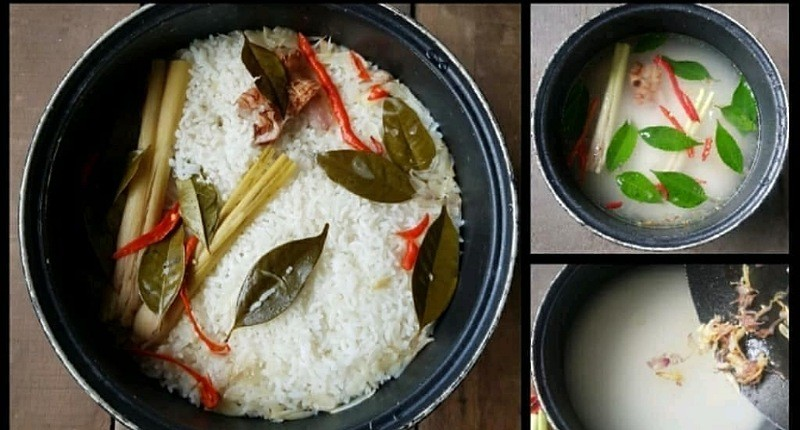
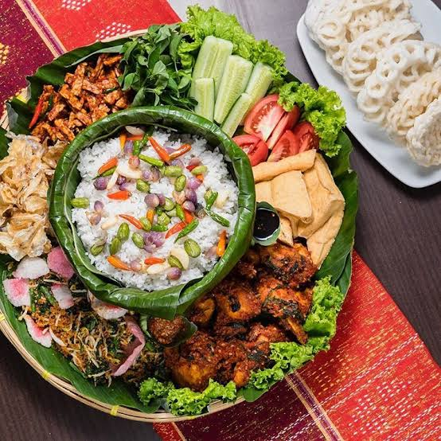

|
|
LEMBAR KERJA PRAKTIKUM (JOBSHEET)MASAKAN INDONESIA — NASI LIWET |
|
- Menyiapkan alat dan bahan pengolahan Nasi Liwet secara sistematis dan higienis.
- Mengelola dan memasak nasi liwet sesuai dengan prosedur operasional standar (SOP).
- Menyajikan nasi liwet dengan penataan (garnis) dan komposisi tampilan yang menarik serta estetis.
Nasi Liwet adalah hidangan nasi khas Indonesia yang dimasak bersama santan, kaldu, dan rempah-rempah aromatik seperti serai, daun jeruk, bawang merah, dan bawang putih. Teknik "liwet" merujuk pada proses memasak beras bersama bumbu di dalam wadah berbahan tebal (panci kastrol atau rice cooker) secara langsung sehingga aroma dan rasa gurih meresap sempurna ke dalam setiap butir nasi.
Penggunaan bahan pelengkap seperti ikan teri Medan goreng, cabai utuh, dan taburan bawang goreng memberikan tekstur renyah serta cita rasa khas tradisional Indonesia yang kaya dan seimbang.
| BAHAN (MATERIALS) | ALAT (TOOLS) |
|---|---|
|
|

Gambar 1.1: Menumis Bumbu Aromatik

Gambar 1.2: Plating & Penyajian Nasi Liwet
| No. | Tahapan Kerja | Deskripsi & Instruksi Pengerjaan |
|---|---|---|
| 1 | Persiapan (Preparation) | Siapkan seluruh alat dan bahan yang dibutuhkan. Cuci beras hingga bersih dengan air mengalir, lalu tiriskan. |
| 2 | Menumis Bumbu (Sauteing) | Panaskan sedikit minyak di wajan. Tumis bawang merah, bawang putih, serai, daun jeruk, dan daun bawang hingga harum dan matang. |
| 3 | Memasak Nasi (Cooking) | Masukkan beras ke dalam rice cooker/panci liwet. Tambahkan tumisan bumbu, sebagian ikan teri goreng, garam, dan penyedap rasa. Tuang air/santan sesuai takaran. |
| 4 | Proses Matang & Tanak | Masak nasi hingga matang (mode cook). Setelah matang, diamkan selama 10 menit agar tanak, lalu aduk perlahan agar bumbu merata. |
| 5 | Penyajian (Plating) | Sajikan nasi liwet hangat di atas piring saji / alas daun pisang. Hias dengan taburan bawang goreng, sisa teri goreng, serta lauk pauk pendamping sesuai selera. |
- Cuci beras hingga bersih agar nasi tidak cepat basi.
- Gunakan api kecil saat menumis bumbu agar tidak cepat gosong.
- Jangan terlalu sering membuka tutup rice cooker saat memasak.
- Aduk nasi secara perlahan setelah matang agar butiran nasi tidak hancur.
Pastikan nasi tidak terlalu lembek atau mentah. Rasa gurih harus seimbang antara santan/air, garam, dan aroma rempah-rempah yang meresap sempurna.
| STANDAR HASIL PRODUK | TROUBLESHOOTING |
|---|---|
|
|
| No | Aspek Penilaian Praktik | Bobot | Skor Siswa | Catatan / Masukan Instruktur |
|---|---|---|---|---|
| 1 | Persiapan Alat, Bahan & Higienitas Kerja | 20% | ||
| 2 | Teknik Pengolahan & Proses Memasak (SOP) | 30% | ||
| 3 | Cita Rasa, Aroma & Tekstur Nasi Liwet | 30% | ||
| 4 | Penampilan, Plating & Kebersihan Area | 20% | ||
| TOTAL SKOR MAXIMAL | 100% | |||
|
Pengajar / Instruktur, ( _______________________ ) |
Siswa / Peserta Praktikum, ( _______________________ ) |